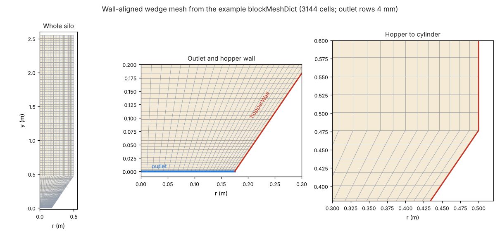
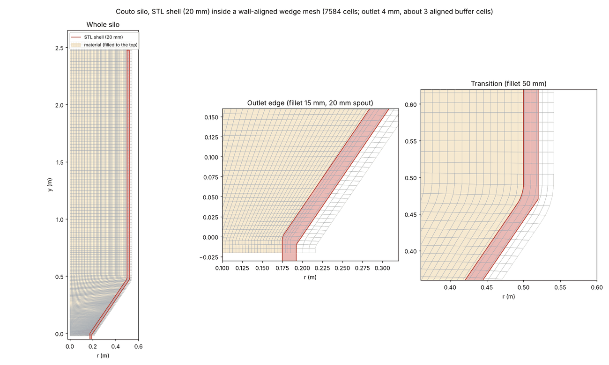

Meshing guide
The Eulerian mesh is fixed: material flows through it. Its cell size near outlets, walls and shear bands sets the accuracy more than anything else. This page says how to build meshes celFoam handles well and how fine they must be.
What meshes celFoam accepts
- Hexahedral cells from any OpenFOAM mesher. blockMesh is the usual tool.
- 2D (plane strain): one cell thick, with the front and back faces in patches of type
empty. Make the thickness equal to the in-plane cell size: on Cartesian meshes the stable time step uses the cube root of the cell volume. Masses and forces in the log are for the thickness of the mesh; divide by the thickness for values per metre of depth. - Axisymmetric: a wedge one cell thick (below).
- 3D: any hex mesh; run in parallel for anything but small cases.
- Angled cells: cells do not have to be rectangles. Wall-aligned (body-fitted) meshes with columns that lean to follow a sloping wall are tested and recommended for hoppers (decisions 0103 to 0110).
Limits of angled cells today. Meshes whose rows stay horizontal and whose columns lean (the hopper meshes on this page) are fully tested, also in parallel and with restart. Meshes turned or sheared so that no family of mesh lines follows gravity still show problems at a free surface: a layer resting on a turned slope creeps slowly (decision 0106). Keep one family of mesh lines horizontal where material has a free surface.
Wall-aligned meshes with blockMesh
For silos and hoppers, build the mesh so that its boundary is the wall. A conical hopper is one trapezoid block whose column lines fan from vertical at the axis to the wall slope, while its rows stay horizontal; the cylinder above is a second block whose columns continue those of the hopper, so the two blocks join cell to cell. This is the same construction as OpenFOAM's own trapezoid tutorials.

The complete system/blockMeshDict (the header lines are as in any OpenFOAM dictionary):
// Wall-aligned wedge mesh of a conical hopper under a cylinder (Couto silo
// geometry): R 0.5 m, outlet radius 0.175 m, hopper wall 34.3 deg from the
// vertical, cylinder 2 m. Wedge half angle 2.5 deg about the y axis.
scale 1;
vertices
(
(0 0 0) // 0 axis, outlet level
(0.174833 0 -0.00763339) // 1 outlet edge, front
(0.499524 0.476432 -0.0218097) // 2 top of the hopper wall, front
(0 0.476432 0) // 3 axis, top of the hopper
(0.174833 0 0.00763339) // 4 outlet edge, back
(0.499524 0.476432 0.0218097) // 5 top of the hopper wall, back
(0.499524 2.55143 -0.0218097) // 6 top of the cylinder, front
(0 2.55143 0) // 7 axis, top
(0.499524 2.55143 0.0218097) // 8 top of the cylinder, back
);
blocks
(
// hopper: a trapezoid whose column lines fan from vertical at the axis
// to the wall slope; rows 5x finer at the outlet (4 mm), columns 2.5x
// finer at the wall than at the axis
hex (0 1 2 3 0 4 5 3) (24 48 1) simpleGrading (0.4 5 1)
// cylinder: the same columns continue, square-ish rows
hex (3 2 6 7 3 5 8 7) (24 83 1) simpleGrading (0.4 1 1)
);
boundary
(
outlet { type patch; faces ((0 1 4 0)); }
hopperWall { type patch; faces ((1 2 5 4)); }
right { type patch; faces ((2 6 8 5)); }
top { type patch; faces ((7 8 6 7)); }
front { type wedge; faces ((0 3 2 1) (3 7 6 2)); }
back { type wedge; faces ((0 4 5 3) (3 5 8 7)); }
axis { type empty; faces ((0 3 3 0) (3 7 7 3)); }
);How the vertices are found: a point at radius \(r\) and height \(y\) on the front face of a
wedge of half angle \(\theta\) is \((r\cos\theta,\ y,\ -r\sin\theta)\), on the back face
\((r\cos\theta,\ y,\ +r\sin\theta)\). The hopper height follows from the wall angle \(\beta\)
measured from the vertical: \(h = (R - R_\text{out})/\tan\beta\). Vertices on the axis
(\(r = 0\)) are shared by both faces, which makes the cells next to the axis prisms that
blockMesh collapses onto the axis patch.
Then, in constant/materialProperties, make the boundaries walls and the outlet an outlet:
walls
{
right { friction 11.3; }
hopperWall { friction 11.3; }
top { friction 0; }
}
outlets
{
outlet { friction 11.3; openTime 1.0; }
}Run blockMesh and then checkMesh. celFoam prints
Angled cells (WP G.1): ... and Axisymmetric wedge mesh ... at the start when it
recognises them.
Grading
simpleGrading (gx gy gz) sets, for each direction, the ratio of the last cell's
size to the first's along the block's local axes. In the hopper block above the first
\(x\) cell is at the axis and the last at the wall, so gx = 0.4 makes the wall column
0.4 times as wide as the axis column; the first \(y\) cell is at the outlet, so gy = 5
makes the top row 5 times as tall as the outlet row. Use the same gx in both blocks so
that their columns match. Keep neighbouring cells within a factor of about 1.2 in size.
How fine?
| Where | Rule | Why |
|---|---|---|
| Outlet of a silo or hopper | Cells of 3 to 5 mm across the outlet (for the 0.35 m Couto outlet that is about 40 cells across its radius on the wedge) | The outlet cells set the discharge rate. For the Couto silo (outlet 0.35 m), the rate rose from 21 kg/s with uniform 25 mm cells to 85 with rows 3 times finer at the outlet, and to 106 with 3 to 5 mm outlet cells; wall grading alone changed almost nothing. |
| Next to walls | Finer columns along the wall (grading 0.3 to 0.5) | The shear layer along a frictional wall is thin. |
| Shear bands | 10 to 20 grain diameters across the band, and cells of about one grain diameter \(d\) to converge its width with the nonlocal law | A local friction law puts every shear band in 1 to 4 cells, so bands and run-outs depend on the mesh (decision 0038). The nonlocal law gives the band a physical width of a few \(d\) (about 3 \(d\) for glass beads, decision 0111), but only cells finer than the band can show it. |
| Bulk of a silo | 25 mm cells in a 1 m silo gave the discharge rate once the outlet was fine; finer cells (12 mm or less) are needed for wall pressures in the upper silo during discharge | Wall pressures higher up in the Couto silo were 15 to 25 % low at 25 mm and still low at 12 mm (decisions 0109, 0115). |
| Under a footing or pile | At least 10 cells across the footing width, better 20 | Bearing capacity was 8 % low with 10 cells across a 0.1 m footing and 2 % low with 20 (decision 0055). |
| Deformable bodies | Elements close to the Eulerian cell size | Much finer elements pack the material under them (decision 0073). |
Fine cells cost twice: more cells, and a smaller time step, because the step is limited by the elastic wave crossing the smallest cell. Halving the cells of a 2D mesh everywhere makes a run about 8 times as long. Refine where it matters (outlet, walls, bands) and keep the rest coarse.
Walls from STL surfaces
A wall of any shape can be given as a closed STL surface on a mesh that does not follow it
(constant/rigidBodies, see Case setup). The cells the
surface cuts keep only their open part, with exact cut geometry (decisions 0043, 0047). This is the
easy way to add tanks, inserts and bodies to a simple background mesh, and it is how moving bodies
work.
Rules for STL walls:
- The surface must be closed, with normals pointing out of the body.
- In 2D and on a wedge, extrude the outline beyond both the front and back of the mesh, so that no part of the surface lies on a mesh face (decision 0093).
- Do not place a surface exactly on a mesh face or a mesh line; move it by a fraction of a cell.
- Split long STL edges into pieces of about a cell, so that each triangle stays near the cells it cuts.
- An outlet under an STL floor is still a mesh patch: leave a gap in the STL over the outlet patch.
The best silo setup: an STL shell inside a wall-aligned mesh
For the Couto silo the most accurate setup so far combines both approaches: the wall-aligned mesh
extends about three cells beyond the silo wall, and the wall itself is a 20 mm thick STL shell with
rounded corners (a 50 mm fillet where the cylinder meets the hopper, 15 mm at the outlet edge, and a
short 20 mm spout). Material that leaks through the wall would show up in the buffer cells; none did.
With outlet cells of 3 to 5 mm and fullBlend yes, the Mohr-Coulomb rate was 124 kg/s, inside
the Beverloo range of 110 to 131 kg/s. Rounded corners raised the rate without changing the wall pressures.
The scripts that build it are tests/hopper/buffered_case.py and tests/hopper/hopper_case.py.

Axisymmetric wedges
- One cell thick, symmetric about the plane \(z = 0\), with the axis along \(y\) as in the example.
- Half angle 2.5° (a 5° wedge) is tested; small angles keep the cells nearly flat.
- Front and back patches of type
wedge; the collapsed faces on the axis of typeempty. - Cells next to the axis are prisms; that is expected.
- The outlet of a round silo is the floor patch from the axis to the outlet radius.
A round silo on the wedge discharged at the same rate as a 3D quarter model of it to 0.2 % (validation report, benchmark 14), at a small fraction of the cost.
Simple Cartesian meshes
A uniform Cartesian blockMesh with STL walls is the quickest way to start, and it is what the
stlSilo, stlHopper and stlTank tutorials use. For hoppers, a wall-aligned mesh is more
accurate: on a Cartesian mesh a sloping wall cuts cells into small pieces of every shape, and the
outlet region needs very fine cells everywhere to resolve it.
Checks before a long run
checkMeshreportsMesh OK; non-orthogonality below about 40°.- Look at the mesh in ParaView, with the STL surfaces loaded on top.
- Run
celBodyCellson cases with STL walls and look atalphaBody: the walls are where you expect, and there is a gap over the outlet patch. - Run a short case with a soft material (lower
Eby 10 to 100 times): it settles in seconds and shows leaks, wrong patches and misplaced material before the real run. - Read the settings block at the top of
log.celFoam: every wall, outlet and inlet is listed.